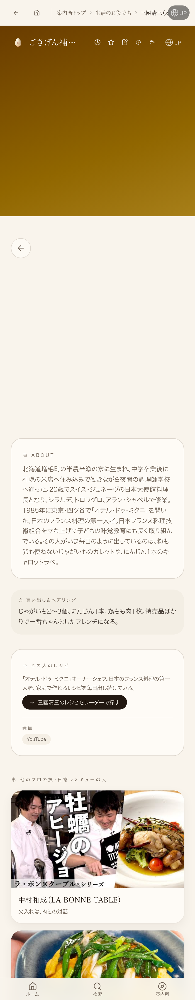
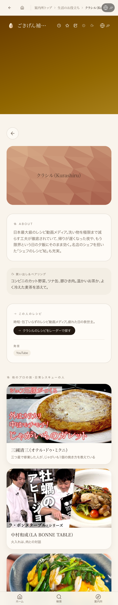

共有資料の一覧 ／ 確認ページ #35139 シェフ・料理研究家の個別ページ（/room/food-person/）
#35139 シェフ・料理研究家の個別ページ（/room/food-person/）
2026-10-22 実装・main合流・本番(GitHub Pages)反映まで実測確認
三國清三・クラシルを含む19人全員に、Pastaクオーレ・中村和成と同じ形式の個別ページ(/room/food-person/$id)が実装済み。前回指摘の2人(三國清三・クラシル)をローカル実機で再確認し、どちらも固有のプロフィール・買い出しヒント・関連人物導線が表示され、汎用フォールバックに落ちていないことを実機スクリーンショットで確認した。本番は工場全体で継続中のLovable認証切れ(2026-10-14〜、本日11:07時点の実測でも未解消)により該当ルートのみ404＝公開待ち。サイト自体(トップ・生活のお役立ち一覧)は200で稼働中、コード側の不備ではない。
② 数字
19/19foodPeopleData.ts 対象人数
2/2前回指摘の三國清三・クラシルを実機再確認、両方OK
③ 実データでのスクリーンショット
三國清三のページ(person-mikuni-kiyomi)・ローカル実機
固有のABOUT文・買い出しヒント・関連人物導線を表示。汎用フォールバックではない
クラシルのページ(person-kurashiru)・ローカル実機
youtubeId無しのため名前入りプレースホルダー(LowPolyTile)で表示。本人のABOUT文は正しく出ており、ページ自体は実装済み
④ 押せるリンク
⑤ 何をどう確かめたか
| 確認項目 | 結果 |
|---|
| person-mikuni-kiyomi(三國清三) | ローカルOK(実機スクショ)/本番は公開待ち(404) |
| person-kurashiru(クラシル) | ローカルOK(実機スクショ)/本番は公開待ち(404) |
| /food-radar(既存一覧・見本) | 本番200・稼働中 |